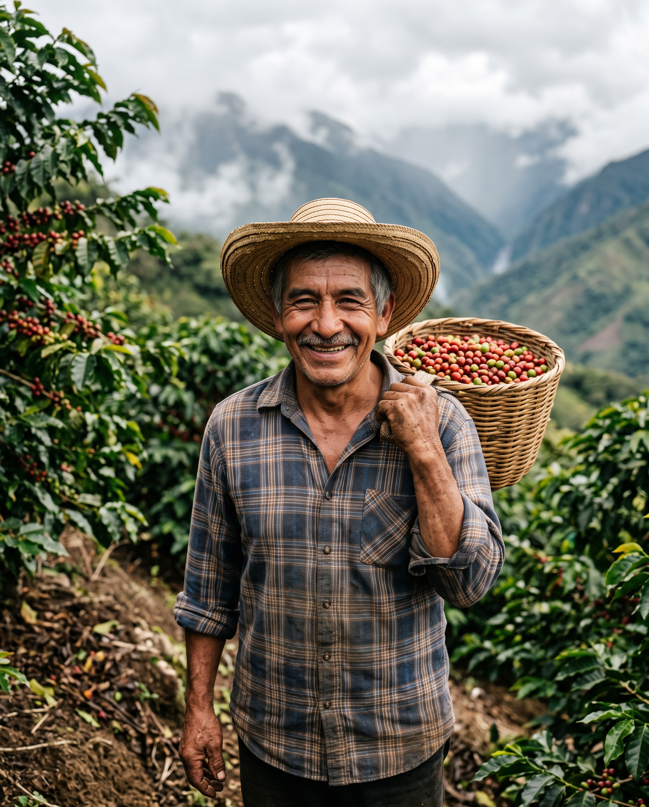

Origen & Altura
Origen & Altura
5 min de lectura
Sombra & Altura: Por qué 1.950 msnm importan en tu taza
Existe una creencia romántica en el mundo del café: cuanto más alto el cultivo, mejor la taza. Descubre la relación directa entre la menor temperatura nocturna de la Sierra Nevada y la densidad celular del grano que resulta en notas vibrantes y dulces.

Don Mateo